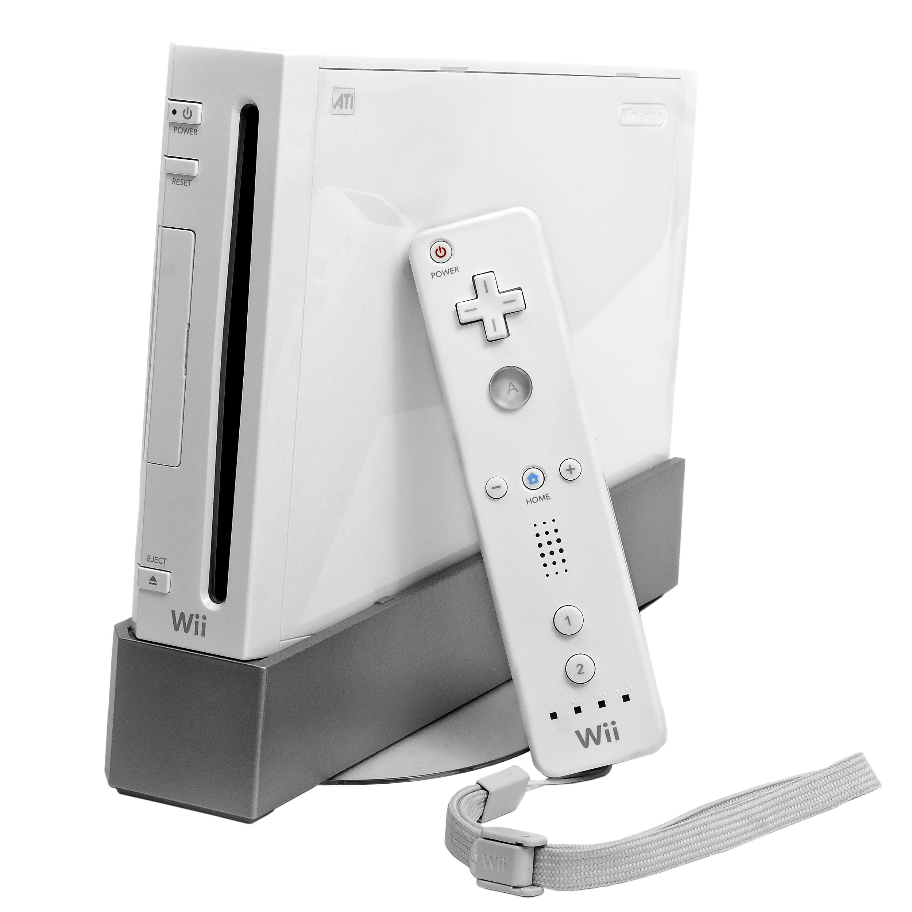

The Autopsy Report · Device #018
The Nintendo Wii
The little white box that got grandparents bowling. We haven't opened one yet, so this report is built from the public record: the FCC grants for its wireless modules, independent teardowns, and the IBM and ATI silicon inside.
What is this thing?
The Nintendo Wii is Nintendo's 2006 seventh-generation console — the one that bet on motion controls instead of raw power and sold over 101 million units, outselling its far more powerful rivals. The Wii Remote talks to the console over Bluetooth; the console itself connects to the internet over Wi-Fi. Wikipedia
Inside: an IBM "Broadway" CPU (729 MHz), an ATI "Hollywood" GPU (243 MHz), and 88 MB of memory — modest numbers that didn't matter, because the experience was the controller. Teardown The paperwork is the interesting part: the console itself was certified by Declaration of Conformity, while its two wireless radios were certified separately as modules — Bluetooth under FCC ID MCLJ27H002 (Hon Hai, granted October 27, 2006) and Wi-Fi under FCC ID EW4DWMW004 (Mitsumi). The console's label reads "Contains FCC ID: MCLJ27H002" — the tell-tale sign of modular approval. FCC grant
Not yet on our bench
No unit of ours has been opened for this report. Everything below comes from public records: the FCC module grants, independent teardowns, and published specifications. The public-record facts are as complete as we could make them; what awaits the bench is everything that requires our hands on our hardware — our own photos, our own measurements, and confirmation of exactly which board revision our future unit carries. When a Wii lands on the bench, the thin spots below are exactly where we'll start.
A short history
- November 19, 2006Nintendo launches the Wii in North America. Wii Sports — packed in — turns motion controls into a cultural phenomenon overnight. Wikipedia
- October 27, 2006The Wii's Bluetooth module — Hon Hai's J27H002, FCC ID MCLJ27H002 — receives its original grant, weeks before launch. The Wii's label will read "Contains FCC ID: MCLJ27H002." FCC grant
- 2006 – 2010The Wii outsells the Xbox 360 and PlayStation 3, peaking as a genuine mainstream phenomenon — retirement homes buy them for bowling leagues. Wikipedia
- 2011 – 2012The Wii Family Edition (no GameCube support) and then the Wii Mini strip the design down; the Wii U succeeds it in 2012. Wikipedia
- 2013Production ends. Final tally: over 101 million units. Wikipedia
The outside
A small white slab (later black and red variants) that stands vertically in its stand, with a slot-loading disc drive that glows blue when a disc slides in. The sensor bar sits on top of the TV; the Wii Remote does the rest. What the photo can't show: the GameCube controller ports hiding under a flap on top of the original models.

The board
The Wii's main board is compact and readable: the IBM Broadway CPU and ATI Hollywood GPU sit side by side, flanked by Samsung flash memory, Qimonda graphics memory, and Elpida system memory. Two small shielded modules carry the wireless: the Hon Hai Bluetooth module (the MCLJ27H002 grantee) and the Mitsumi Wi-Fi module (EW4DWMW004) — the same modules the FCC tested on their own, independent of the console. Teardown Our future unit's exact board revision and module date codes await the bench.
Under the microscope: the chips
What's on the board, what each part does, and how sure we are. Confirmed means primary evidence only — an FCC exhibit, a manufacturer manual or datasheet, or an official announcement. Likely means corroborated secondary or public-teardown evidence. Markings are representative; board revisions differ.
| Chip | What it does | How we know | Dig deeper |
|---|---|---|---|
| IBM Broadway 729 MHz, 90 nm |
The CPU — a PowerPC design, the Wii's modest but efficient brain. | Likely Identified in semiconductor teardown analysis; speeds per the technical literature. | Teardown analysis |
| ATI Hollywood 243 MHz |
The GPU — draws the games, with embedded memory on the package. | Likely Identified in semiconductor teardown analysis. | Teardown analysis |
| Broadcom BCM2042 in Hon Hai J27H002 Bluetooth module |
Bluetooth radio — the link between the console and the Wii Remotes. | Likely Identified in semiconductor analysis; the exact Bluetooth IC was held confidential in the FCC filing. | FCC grant |
| Broadcom BCM4318 in Mitsumi EW4DWMW004 Wi-Fi module |
Wi-Fi radio (802.11b/g) — the console's internet connection. | Likely Identified in modular-approval records and teardown analysis. | Teardown analysis |
| Samsung K9F4G08U0A 4-Gbit NAND flash |
Built-in storage — save data, channels, and downloaded games. | Likely Marking documented in teardown analysis. | Teardown analysis |
| Qimonda HYB18HS1232 + Elpida S1616AGTA | Graphics memory and system memory — the working RAM pool. | Likely Markings documented in teardown analysis. | Teardown analysis |
The exact Bluetooth IC stayed confidential in the FCC filing — we report what the analysis found and mark it accordingly, not what we wish the filing showed. Awaiting the bench: our unit's board revision, module date codes, and memory vendor mix.
The government's file on this box
The Wii is the textbook case of modular approval. The console itself carries no console-level FCC ID — it was certified by Declaration of Conformity. But open it up and you'll find two separately certified radios: the Bluetooth module under FCC ID MCLJ27H002 (grantee Hon Hai, original grant October 27, 2006) and the Wi-Fi module under FCC ID EW4DWMW004 (Mitsumi). The console's label says "Contains FCC ID: MCLJ27H002" — that phrasing is the giveaway that the radio was approved on its own and installed inside. FCC grant
One thing we will not do: invent a console-level Nintendo (BKE) filing for the Wii. There isn't one, and the modular-approval story is more interesting anyway. Browse the Bluetooth grant: MCLJ27H002 on fccid.io.
Debug and service modes
Nintendo published an official system transfer procedure for the Wii — the legitimate, manufacturer-documented way to move your data to a new console. From Nintendo's own Wii operations manual: open the Wii Shop Channel, select Settings, then System Transfer, and follow the on-screen steps to move save data and channels to another Wii. Nintendo's Wii manual (PDF) This is a legitimate, manufacturer-published procedure — the kind of thing we document, not the kind we defeat. We haven't tested it on our own hardware, because we don't have any yet.
What public records show
The public record gives us the Wii's full biography: launch and end-of-production dates, the IBM/ATI architecture, the memory configuration, both wireless module grants with dates, and an official system-transfer procedure. What it does not give us is anything that only exists inside a specific unit — board revision, module date codes, or how component choices drifted across the Wii's seven-year production. That's the bench's job.
What we haven't done
- We haven't opened, photographed, or measured a Wii of our own.
- We haven't confirmed which board revision our future unit will be.
- We haven't verified the module or chip markings against physical hardware.
- We haven't tested any service procedure.
- The photo above is a freely licensed stock image, credited in full — not our hardware.
By the numbers
- Model: Nintendo Wii (2006); Family Edition and Wii Mini variants
- FCC: console by Declaration of Conformity; Bluetooth module MCLJ27H002 (Hon Hai, granted 2006-10-27); Wi-Fi module EW4DWMW004 (Mitsumi)
- CPU: IBM Broadway, 729 MHz
- GPU: ATI Hollywood, 243 MHz
- Memory: 88 MB total (24 MB fast + 64 MB system)
- Storage: 512 MB NAND flash, plus SD slot
- Wireless: Bluetooth (Wii Remotes), 802.11b/g Wi-Fi
- Launched: November 19, 2006 (North America)
- Units sold: over 101 million
Words to know
Every term this page uses, in plain English. No prior knowledge required.
- Modular approval
- The FCC lets a radio module be certified on its own, then installed in many products. The host device's label says "Contains FCC ID:" — the Wii is the classic example.
- Declaration of Conformity
- The FCC's self-certification path for the console itself — no console-level FCC ID, because the radios were already approved as modules.
- Broadway / Hollywood
- The code names for the Wii's CPU (IBM) and GPU (ATI). Console chips always get code names; these two got theater names.
- PowerPC
- The processor family inside the Wii (and the GameCube before it, and the Xbox 360 beside it) — IBM's RISC design, not Intel's.
- System Transfer
- Nintendo's official procedure for moving your Wii's data to another Wii, via the Wii Shop Channel.
- FCC ID
- The ID the FCC assigns to each approved wireless product. Punch it into fccid.io and the whole public filing comes up.
Sources & confidence
- FCC ID MCLJ27H002 (Hon Hai Bluetooth module, granted 2006-10-27) and the "Contains FCC ID" label: the FCC grant record. High confidence.
- FCC ID EW4DWMW004 (Mitsumi Wi-Fi module): modular-approval records. High confidence.
- Chip identities (Broadway, Hollywood, BCM2042, BCM4318, Samsung/Qimonda/Elpida memory): semiconductor teardown analysis with photographs. Medium-high confidence; the exact Bluetooth IC was confidential in the filing.
- Launch/end dates, sales figures, CPU/GPU speeds: published technical overviews. High confidence in the facts, medium in any single source.
- System Transfer procedure: Nintendo's official Wii operations manual. High confidence in the procedure's existence; untested by us.
- Anything not listed here is unknown until the bench says otherwise. We'll say so, out loud, when that's the case.
We publish no firmware, serials, keys, or private data. This report uses only public records plus a freely licensed stock photo.
Legal note. BareBoard is an educational project. We don't publish, host, or distribute firmware, keys, passwords, or credentials. Product names and trademarks belong to their respective owners and appear here only to identify the hardware. If you believe anything here infringes your rights, contact us and we'll address it promptly.